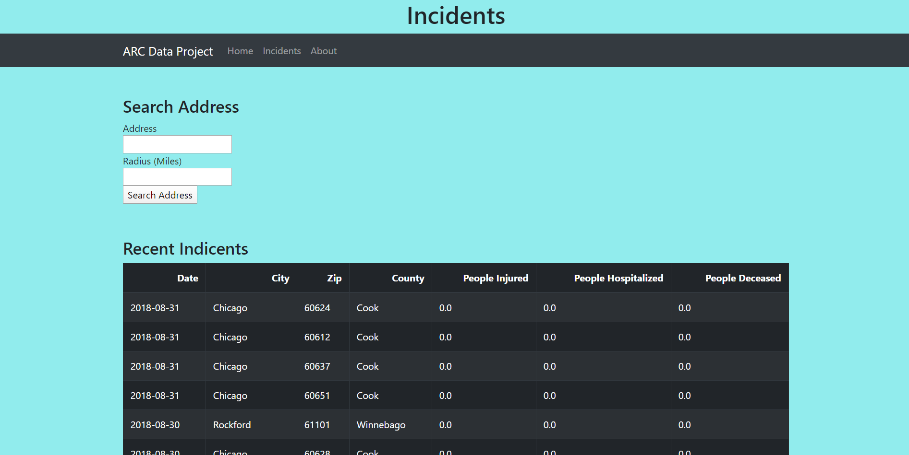

Projects
Cru IIT website
I designed, wrote, and completed a website in HTML and CSS to centralize Cru’s information and make it easily accessible and visually appealing to the public. Please check it out here!
Flight booking simulator
For this flight booking simulatorI designed an entity relationship model to plan interactions between tables within the flight booking database. I also Created a Data Definition Language and all SQL queries used by the application, as well as developing the Graphic User Interface using Java JFrames for front end user application. The application was hooked up to a PostgreSQL server
Check out the Github of this project here!
Fire accidents response map using American red cross data
I collaborated with other students to produce a fire incidence heat map using real fire incident data from the American Red Cross. We used pandas and plotly in python to generate graphs for data visualization and to draw information such as fire incident frequencies from each county in Chicago. In the maps below you will see green yellow spots with a number (the number of incidents recorded to that date which was 2019), as well as the nearest firestation location marked by the red pegs
Click here for the Fire map Github!
Here are some images of how the website turned out!

